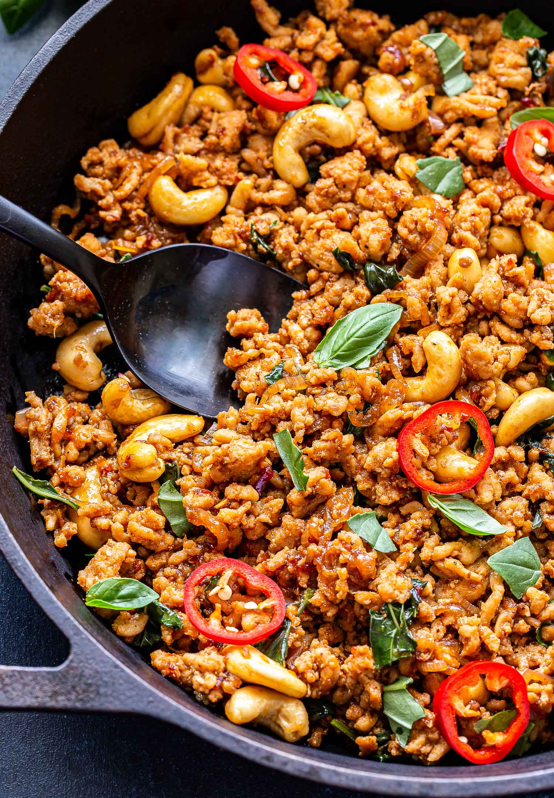

Homepage
Thai Basil Chicken

Thai basil chicken is a stir-fry dish popular in Thai cuisine. This meal is spicy, sweet, and packed with umami flavor.
Ingredients
- Ground chicken (1-2 chicken breasts)
- 2 Tbsp vegetable oil
- Quarter cup shallots (sliced)
- 4 cloves garlic (minced)
- 2 Tbsp Thai or serrano chilies
- Third cup chicken broth
- 1 Tbsp soy sauce
- 1 Tbsp oyster sauce
- 2 tsp fish sauce
- 1 tsp white sugar
- 1 tsp brown sugar
- 1 bunch (33) basil leaves (sliced thin)
Preparation directions
- Mix oyster sauce, fish sauce, soy sauce, brown sugar, white sugar, and chicken broth together. Mix well.
- Wash and slice basil very thin.
- Mince garlic.
- Slice shallots.
- Slice chilies.
- If your chicken isn't ground: grind chicken down with cleaver.
Cooking directions
- Heat cast iron skillet until pan is smoking hot.
- Add vegetable oil to skillet.
- Add chicken to skillet.
- Cook chicken for 2 to 3 minutes. until it loses raw color.
- Stir in garlic,shallots, and chilies. Continue cooking until juices starts to caramelize, about 2 to 3 minutes.
- Add half of sauce mix to skillet. Cook and stir until sauce starts to caramelize.
- Pour in the rest of sauce mix. Cook and stir until sauce has deglazed bottom of pan. Continue cooking until sauce glazes onto meat. about 1 to 2 minutes.
- Remove skillet from heat. Add in basil and stir until wilted, about 20 to 30 seconds.
- Serve with rice and enjoy!